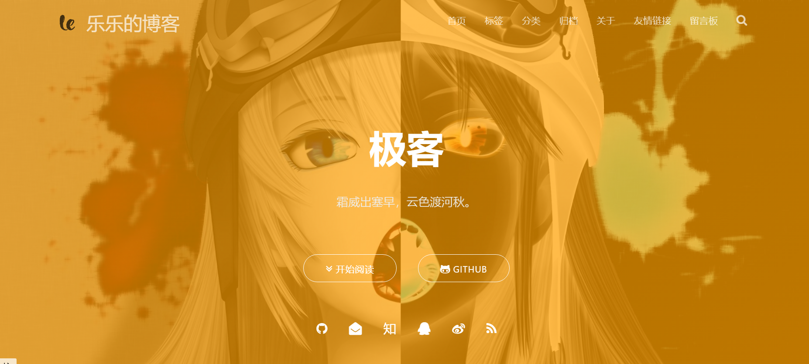
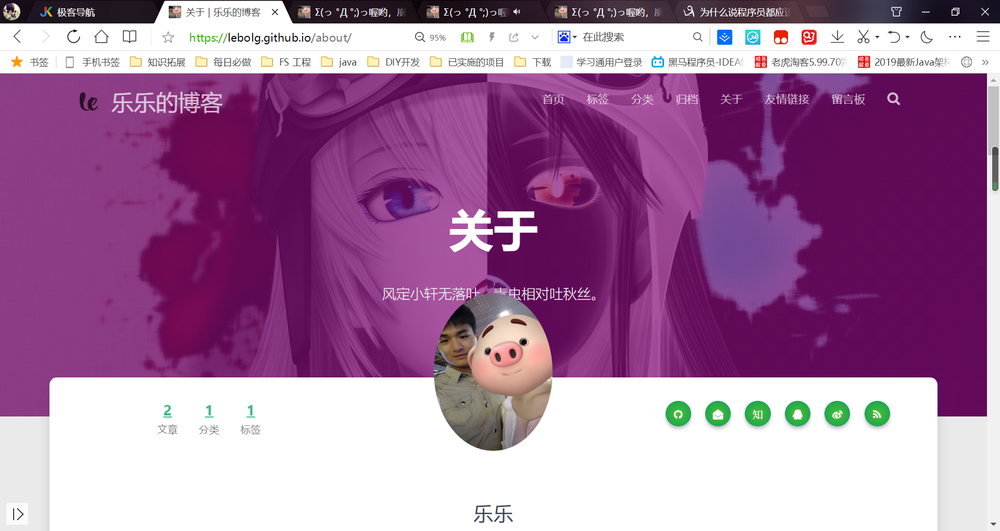
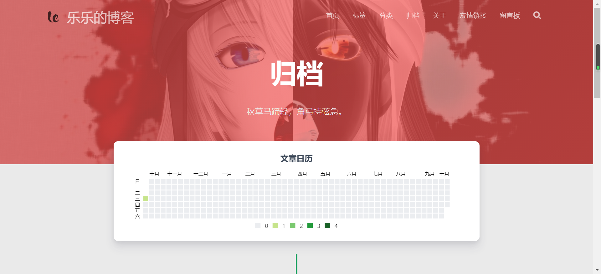

不是大牛就不能写博客了吗？
几乎每一个程序员都听说过写博客有很多好处，但真的动手去写的却很少。其中有一个很重要的原因就是，有些人心里会认为：我不是大牛，写出来的博客没意义。
有任何问题请联系我扣扣：1260842695，vx：szhll5201314，24小时随时在线哦
如果觉得有用的话可以看心情打赏一杯奶茶，我会很开心哒。

有这种心理很正常，只是每个人表现出来的方式不太一样。像我五音不全，就非常讨厌去KTV，就算因为公司团建同学聚会实在拗不过别人真的去了，也从来不开口唱，因为怕被别人笑。有些人不爱打扮不是因为完全没有眼光没有审美基础，其实他们也知道什么衣服好看什么衣服不好看，只是因为觉得自己长相普通身材不好，所以就不愿意把时间精力花在这些地方。归根到底，就是觉得只有出色才应该表现自己。

你不是大牛，照样可以写博客。有一次，我用几个流行的框架组合搭建一个新项目，过程中报了一个错，报错的日志信息不清不楚，完全不知道从何下手。于是就把自己情况提取关键字在网上搜索，看到有一个网友写的博客记录了一模一样的问题，并且提供了他的解决办法。我根据他说的步骤去做，果然就解决了这个问题。他不是大牛，那篇博客也写得非常简单，但是的确解决了这个困扰了我大半天的问题，帮我节省了很多时间。我们在学习工作的时候，也会遇到很多问题，这些问题很有可能别人一样也会遇到。解决问题之后，我们可以把解决过程写成一篇简单的博客，既可以让自己积累经验，也能为其他有需要的网友提供帮助。

你不是大牛，更应该试试写博客。无论是程序开发，还是测试运维，吃的这碗饭都是干技术的。技术更新速度非常快，所以我们即便离开了校园照样要学习许多新知识。有些技术大牛，由于经验丰富和技术水平高，面对一个新出来的技术，可能只需要看看官方文档和源代码，再写几个简单的实验小项目就已经熟悉和掌握了。我们不是大牛，有可能因为英文水平不够看不懂官方文档，有可能因为经验不足不知道怎么研究几十万行级别的源代码，甚至有可能不知道要怎么搭建一个使用这个新技术的项目。这时候我们就需要去看书，看技术博客，借助资料去学习，根据别人指出的方向去摸索。这个过程当中，我们就应该试试写博客，把学习笔记写下来，把自己摸索的经历写下来，整理学习的思路，而不是看过就忘、学过就丢。
#不是大牛就不能写博客了吗？
其实这个问题就是一层窗户纸，大家都知道自己能写，而且还有可能可以写得很好。你的博客一定会有其不可替代的意义，既可以为他人提供帮助，也是对自己在学习公众道路上有所助益的一件事。即便你现在的技术水平不高，还是一个刚入门的菜鸟，也一样应该试着写一写博客。
我的博客历史之红与黑
写博客是一件并不困难的事，但是也绝对不容易，不然也不会有那么多人还没有开始写自己的第一篇博客。坚持写博客是一件有点困难的事情，在这一点上我深有体会。接下来我想跟大家分享一下近几年来写博客和公众号文章的感想，有很多提起就觉得尴尬的黑历史，也有一些自己觉得很有意义的红历史。
先从黑历史讲起。一开始写的博客很烂，现在回头去看简直是辣眼睛。我第一篇在博客园发的博客是讲如何搭建Java Web MVC框架的，直到现在还能在我的博客主页里面看到。当时我还在上大学，其实对web开发和MVC框架都是一窍不通的，结果写出来的东西也是乱七八糟，无论是排版还是内容都惨不忍睹。
再讲讲红历史。从我写的第一篇博客开始就给了我很多的鼓励，这主要是体现在阅读量和友好的评论这两方面上。有了大家的鼓励，我才能坚持到现在。写的第一篇我觉得比较好的博客就是《程序猿崛起2》，虽然质量仍然不高，但是比起之前的文章来说，有了自己的观点和想法，显得没有那么空洞。再说说我的公众号，因为读者组成的关系，所以在上面很少会专门谈论技术，主要是写一些我在看书过程中产生的一些想法和观点。受到《暗时间》的影响，我平时看了大量的关于心理学、社会学的书。有的时候每周一篇，有的时候半个月一篇，就这样坚持了三年。现在的写作能力和思考能力，都有了比之前不少的进步。
互联网最重要的分享,这才是互联网最可贵的互助精神
写博客写文章的人，都会遇到两个麻烦。第一个麻烦就是有人会泼你冷水，甚至是打着好心提建议的旗号泼你的冷水。不要理会他们的说三道四，直接就把他们拉黑就好。新手一开始需要的是鼓励和认同，绝对不是那些非建设性意见的批评。曾经有个大学同学看了我的文章，说：“你写的没什么内容啊，就是一些大话。”我直接就把他屏蔽掉了。第二个麻烦就是坚持不下去，写了一两篇就再也不写了。首先你要培养对写作的兴趣，感受写文章的快乐。当然了，像我这样会为一个关注数只有四五百的公众号每个星期写文章、每篇文章顶了天一百多阅读数的人来说，如果不是真心喜欢，根本坚持不下来。然后你要想想那些朋友和网友的鼓励，不要辜负他们的一片好心。我经常会特别感谢那些在我的博客下面评论“加油”的人，因为简简单单的几个字就能给我很大的力量，鼓励我继续写下去。我们要相信，只要坚持下去，除了那些找存在感的人泼你冷水，还有更多的热心人给你加油鼓劲。
实干兴邦，空谈误国
动动手，让我们开始写一写博客
列举了这么多写博客的好处，相信已经有很多人都已经跃跃欲试了。不如趁热打铁，我们现在就花几分钟的时间来体验一下写博客到底要怎么写。不要紧张，这一点都不难，只要接下来一步一步跟着做就可以了。
最后再多说两句
其实分享知识和可以帮助学习工作的方式有很多，并不一定就是要写博客，但这却是最有普及价值和最简单的一种途径。我写这篇文章的初衷，就是希望让更多的人参与到写博客这件有意义的事情中来，从中受益的同时也可以惠及他人。